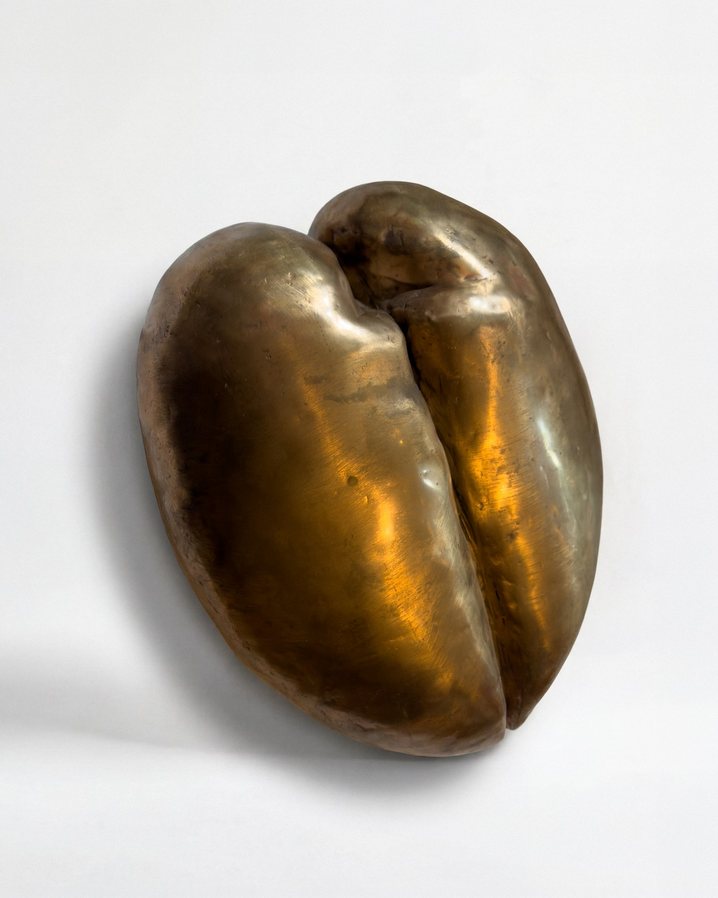

GROUND-AVB-04 · updated today
100% of the sale proceeds go to the artist.
Anne van Borselen works independently, without gallery representation.
Sales inquiries are coordinated by Ruth Hogewoning.
Instagram — @annevanborselen